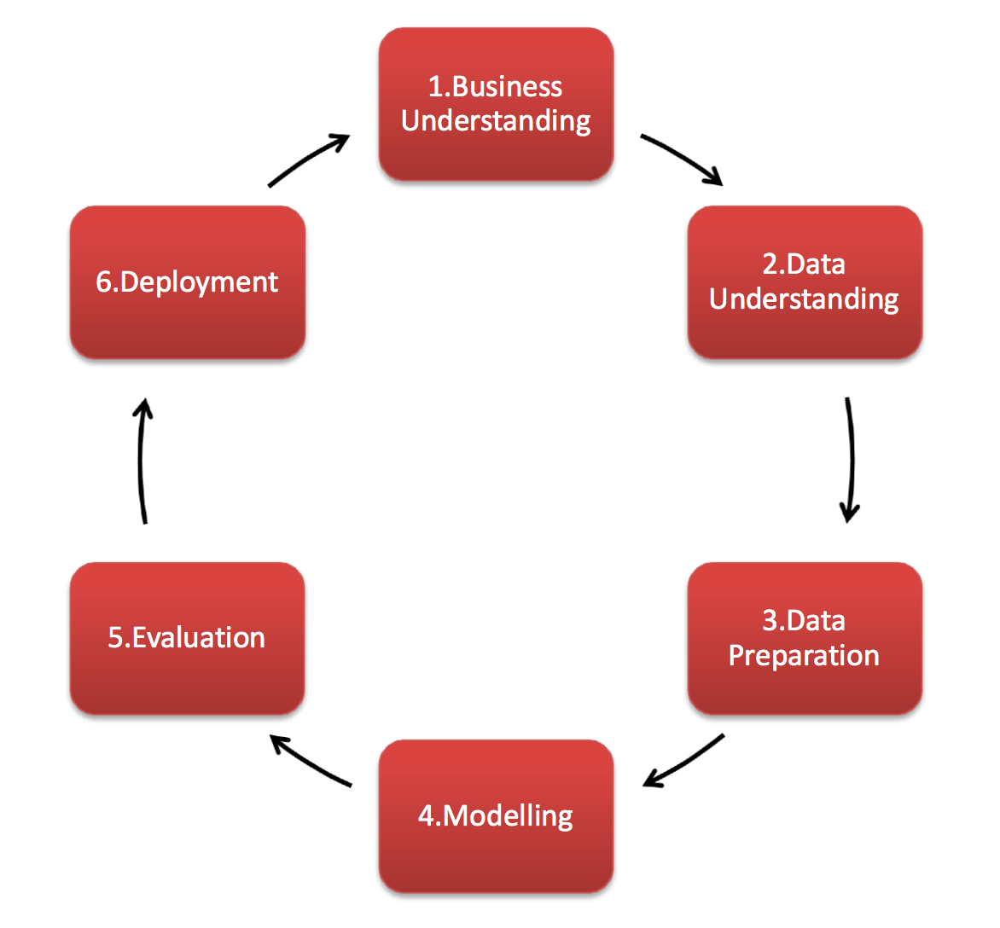

Working with Data
![]()
This guide explores the use of data within libraries through presenting questions to think through when undertaking your own data tasks, alongside practical examples from libraries around the world.
Introduction
Data is all around us. Libraries are full of data, but staff often think they do not work with data. Have you ever been asked how many loans a book has had? What about how many visitors came in at the weekend? Or if a certain book is available? These are all data questions, answerable with quantifiable facts.
Data is often considered to be a number, like the number of times a book has been loaned, but what about who borrowed it, or what their review was. These are all different forms of data, and can provide all new insights to the popularity of a book - maybe a book was borrowed 10 times, but in fact got 10 1-star reviews, versus a book borrowed 5 times with 5 5-star reviews. Using this data, which one would you recommend?
This guide will explore the use of data within libraries through proposing questions to think through when undertaking your own data tasks, alongside practical examples from libraries around the world.
What is Data?
Data is often overwhelming (the term ‘Big Data’ floats around a lot!), but that shouldn’t stop you from exploring it, because it can greatly improve your work.
First, let’s establish some definitions (for this guide at least) of common terms surrounding working with data, particularly library related data:
| Term | Definition | Library Example |
|---|---|---|
| Data | A collection of values that convey information | Data about visitors’ experience of a library |
| Data Point | A single point of data | One user review of a library |
| Dataset | A collection of data from a single source or about a single subject | A spreadsheet of all user reviews of the library |
| Metadata | Data that provides information about other data. Metadata can also be data, for example if we analysed all the titles in a catalogue, the titles are metadata about works, but become the data for our analysis | Column names in a spreadsheet containing user reviews, or metadata in a library catalogue like price, ISBN, author, and title |
| Database | A place to store data in an organised way | The main catalogue |
| Dataframe | A table of data, particularly in analysis or visualisation software | A dataframe of user reviews in an analysis package |
| Qualitative Data | Descriptive, non-numerical data that captures characteristics, experiences, or meanings through words, observations, or categories | The text part of reviews where how library users explain how they felt about their visit |
| Quantitative Data | Numerical data that can be analysed using statistical techniques | 1-5 star ratings of user visits |
| Data Analytics | Cleaning, organizing, visualising, and interpreting existing data to support decision-making | Looking at trends in user visits to see if demand is going up or down |
| Data Science | Combining statistics, programming and machine learning to further examine, interpret, and make predictions from data | Creating a book recommender algorithm |
Where is the data in a library?
Here are some examples to get you thinking about what data points stem from a library. Consider the different aspects of a library below, which do you interact with? What data might they generate? Do you consider yourself to work with data?
| Area | Example Data Points |
|---|---|
| Building | - Footfall / entry counts - Types of facilities and their usage (reading room reservations / lockers) - Opening hours - Environmental Information (light, humidity, temp) - Maintenance records - Accessibility services - Security incidents - Wif-fi usage patterns |
| Institution | - Staffing demographics and roles - Departments - Budget allocation and spend - Qualifications & education - Skills & training - Suppliers - Stakeholders/Partnership/Donor Data |
| Collection | - Catalogue Metadata - Collection item counts by format - Digitisation status - Usage statistics (downloads, API hits) - Subscriptions - Purchasing/Acquisitions - Systems and software in use |
| Engagement | - Event attendance - Helpdesk queries and topics (in-person, email, online chat etc.) - User feedback - Website analytics - Tours & Exhibition attendance |
Relevance to the Library Sector (Case Studies/Use Cases)
Data with purpose
Library data should be collected, stored and actively managed with purpose. In fact, particularly if it is personally identifiable data, ensuring you have a well defined reason for collecting it (and data management plans in place) may actually be required by law. The purpose of data collection could be any of the following:
- Provide insights to pertinent questions, and thus make informed decisions.
- Provide evidence of a decision or conclusion.
- Explore relationships / trends, to tell a story and provide insights.
- Explain (and display) complex information more effectively.
Data can provide additional power when making a decision (big or small) - knowing exactly how many users visit at the weekend can help the library plan a realistic budget for staffing to stay open on the weekend. Conversely if your data collection reveals visitor numbers are low on weekends, those numbers can help direct your institution to investigate this further and make changes to attract more users or change opening hours.
Data can inform Library decisions about:
- Collection Management: What is being used, when, by who, and why (if you have a review system).
- Example: Within our collection, how often do users borrow material published before 2000? (But remember, borrowing is not the only form of usage!).
- Outreach: Who forms our community, what matters to the community.
- Example: Does the demographic of people attending our events reflect the demographic of people in our wider community? Which events could make the library more appealing to the wider community?
- Funding / Expenditure: Use data about patron usage, reader requests or patron feedback as part of an application for additional funding or staffing to prove your standing within the community.
- Example: How much would it cost to buy an additional copy of a book, if it had more than three reservations at a given time?
- Reviewing Success: When starting a new project or approach, consider how it will be measured as a success. Knowing how to measure the impact of a project will enable you to actively reflect and produce solid facts about the success of your project.
- Example: How can we measure patron satisfaction currently, so that at the end of the project a 10% increase can be quantified and thus the project can be considered a success?
Here are a few real world examples of libraries utilising their data to make powerful changes.
Telling Stories with Library Data July 2021 In this article by Michael Cummings, Assistant Museum Librarian for Library Systems, he explores how The Metropolitan Museum of Art (New York) Watson Library produces data visualisations using Microsoft Power BI in regards to their library activities. Using the library management system (data which they already had), Google Analytics, digital collections and some manual tallies, they explored six years of library data. This exploration demonstrated the benefit of moving their blog from an external website, created an index of African American Artists, and allowed sharing library metrics for the previous six years publicly.
When is a Year Complete? October 2023 It is well known that publications databases take time to update, but how long? Collection Analysis Librarian at Iowa State University, Eric Schares, wanted to know how long to wait before being able to analyse a calendar year of publications, and set about doing so by comparing data from three different publication services (Dimensions, Web of Science and Open Alex). The data (which continues to be updated), documented the rise of Open Alex, and demonstrated part of the effectiveness of each service for Iowa State University - however he also shares his code and thus you can replicate this data question at your own institution.
Use of Institution Data Analysis for Publisher Negotiations July 2023 | Utilising Data to Understand the Institutions Relationship with a Publisher March 2024 Data Analyst at the University of Cambridge Library Niamh Malin, was responsible for supporting the many publisher negotiations. The first paper addresses the use of Microsoft Excel and Dimensions publications data to document the relationship of the university with Springer Nature. The second presentation documents the transition to Microsoft Power BI to create data dashboards which ensure every publisher negotiation is informed by usage and publications data.
Using Analytics to Extract Value from the Library’s Data - Event Part One: Analytics Behind the Scenes and Part Two: Actionable Data Analysis September 2018 The National Information Standards Organization (NISO) hosted a two part webinar in 2018 about extracting value from library data. The slides for the six presentations are available, and cover topics such as; setting up a data analysis strategy, analysing metadata, utilising data visualisations, actioning data insights for utilising physical spaces and building confidence in your data analysis skills.
Libraries support data-driven decision making February 2024 An OCLC-Liber blog post by Rebecca Bryant, Senior Programme Officer at the OCLC Research Library Partnership, following their “Building for the future” program. During the program librarians gathered to discuss their understanding and practical interpretations of data driven libraries.
Utilising new modes of data to enhance research strategy and collaboration November 2023 Digital Science, the creators of Altmetric, look at how institutions can get high-quality insights into research by standardising their data systems.
Hands-on activity and other self-guided tutorial(s)
The process of utilising data is a cycle, a standard process model that describes a common approach to data is CRISP-DM (Cross-industry standard process for data mining). It has six stages, listed below.

This section will enable you to walk through an assessment of your data, through a variety of leading questions, at each stage of the cycle. You can use it to have a think and guided discussion around data held in your Library. How long each phase takes will depend entirely on the project, there is no right or wrong, and it is cyclical, you will return to questions as you develop the project. These are structured as questions because one guide cannot have all the answers, and therefore giving a variety of questions will hopefully ensure you do not miss anything, and learn much more which is relevant to your project. This approach will enable you to assess if the data you have is relevant to the question, and if it has the potential to answer it correctly.
This guide hopes to calm your nerves about using data, and to see that you are capable of answering data questions confidently.
Business Understanding
The Business Understanding phase focuses on understanding the objectives and requirements of the project. Here you are planning your project.
- What questions are you answering?
- Who are your stakeholders?
- What are the criteria and limitations to the project?
- What is the goal of using this data?
- What resources are (or are not) available?
- What is the timeline on the project? And the data input specifically?
- What stage of the project requires data analysis?
- What is the expected outcome of the data analysis?
Data Understanding
Data Understanding drives the focus to identify, collect, and analyse the relevant datasets.
- Can you access the data you require? What is the source?
- What data (and metadata) is missing?
- How reliable is the data?
- What relationships are relevant within the data?
- Who is involved in gathering and preparing the data?
Data Preparation
A common rule of thumb is that 80% of the project is Data Preparation. Note that many of the prompting questions below relate specifically to tabular data as this is the kind of data that many folks in libraries will encounter when first starting to work with data. Tidy data for Librarians for instance is an excellent resource with lots more guidance and advice around preparing data, with a particular focus on spreadsheet/tabular data. But do remember that in the library domain there are many other kinds of data representations and data types.
- What data is not necessary from the dataset?
- How are errors or duplications handled?
- What new attributes or formulas are required?
- How do datasets interact with one another?
- Is the data formatted correctly for the analysis you need to do?
- What acronyms are in use? Are they formatted correctly?
- Has the data been standardised?
- Are the column names and/or data labels useful and appropriate?
- Does every database have a unique identifier column?
- How do you handle missing metadata?
- Are you editing the master / only copy?
- Have you documented the process so that you can provide evidence if needed?
- Is the data in a clear and useable format?
- Have all merged cells been removed / updated?
Modelling
Modelling is often regarded as the most exciting work, but is also often the shortest phase. Now is the time to build and assess various models or visualise your data. See our DS Topic Guide on Data Visualisation for more guidance.
- What conclusions can be drawn from the data?
- What visualisations are appropriate to display the data?
- What comparisons and relationships should be highlighted to align with your initial goal?
- Does the data contradict the hypothesis? Why?
- Do the formulas need to be live? Tip: Live formula within a spreadsheet can cause it to be slow and large in size.
Evaluation
The Evaluation phase looks more broadly at the data project and what to do next.
- Did the data fulfil the goal of this project?
- What was unable to be achieved?
- What is required for the next data project to run more efficiently?
- Has the project been completed successfully?
Deployment
Depending on the requirements, the Deployment phase can be as simple as emailing a graph, or as complex as publishing a live dashboard of intricate data and visuals.
- Who requires the outcome of this project?
- Will the outcome need to be presented in multiple formats?
- Will this be repeated again? Has it been documented?
- Where will the data and outcome be stored?
Storing a datafile / spreadsheet
Once the data exists, it must be stored in an accessible and organised way. There are a variety of software, or open repositories online (see the DS Topic Guide on Supporting Open Research (Science), which can store your data, it is important to take some time to decide on the right destination.
- Are the files/your dataset in the right format for its intended reuse/requirements of the repository? (see guidance on different file formats and Choosing the right format for Open Data)
- Will it need to be accessed online and/or offline?
- Does the data require a software licence to access?
- What backups are required?
- How long are files required to be stored? Will they be deleted or archived?
- Have you established a naming convention for files? Does it account for versions, dating and author? Tip: Have titles be meaningful, in a relevant order, and versions discernible.
- Is there clear documentation of the processes undertaken? Therefore ensuring the task can be repeated, or to justify any conclusions. Tip: This should include the source of the data, any cleaning steps made, and all relevant metadata. Consider using Datasheets for Datasets.
Recommended Reading/Viewing
Defining Data Librarians
- Defining data librarianship: a survey of competencies, skills, and training (July 2018). Federer aims to define data librarianship by exploring the skills and knowledge that data librarians utilise and the training that they need to succeed.
- Introduction to Databrarianship: The Academic Data Librarian in Theory and Practice (2016). Thompson and Kellam explore the diverse field of data librarianship, highlighting its key commitment to accessible data.
- Data librarianship: a day in the life (2011). Interviews with data librarians across the world highlight the challenge and opportunities of data in libraries, including the creation of data services within an academic library.
- The future for numeric data services (2011). Exploring the future of data librarians, with trends in visualisation, mapping, standardisation, citation and data management plans.
- Librarian roles in the digital data-driven world (September 2021). Thai/English paper exploring the role of data librarians as someone who continues to acquire new knowledge and skills with technology and the digital era.
- CILIP (Chartered Institute of Library and Information Professionals) provides definitions on the data science roles available within a library.
Library Endorsed Resources
- LIBER members have created the Digital Scholarship & Data Science Topic Guides for Library Professionals, which this guide is a part of. Guidance also includes Data Visualisation and Collections as Data, and Open Research (Open Science) which further detail important elements of working with library data.
- JISC has published resources to support data-driven decisions, including interactive insights on graduate outcomes and conducting online surveys as a form of data gathering.
- The DSVIL (Data Science and Visualization Institute for Librarians) provides great guidance and resources for finding, cleaning, analysing, visualising and managing data.
- The Bodleian Library, University of Oxford, hosts a variety of resources to support data analysis (including audio-visual), data mining, and visualisation tools.
- Duke University Libraries have a plethora of resources for data science, data management and data visualisation freely available.
- ARL (Associations of Research Libraries) demonstrate the impact data analytics can have within libraries and library communities.
- IFLA (International Federation of Library Associations and Institutions) has a variety of data analytics resources which cover using specific software, trends in the news, and practical applications of data within libraries.
- The PLA (Public Library Association) (which is part of ALA, the American Library Association), have developed data tools to enable public libraries to be compared across multiple metrics.
Learning Data Skills Beyond Libraries
There are numerous platforms dedicated to data skills more generally, listed below are some of the most popular for beginning your data journey.
- The Carpentries: Community-led coding and data science courses for researchers and librarians, with three specialties; Data Carpentry (data skills for conducting research), Library Carpentry (software and data skills for librarians), and Software Carpentry (lab skills for research computing).
- Datacamp: great for free cheat sheets (webpage or PDF) on data literacy, understanding data knowledge levels and data storytelling. As well as resources and courses for a variety of coding and data software.
- LinkedIn Learning: a wonderful resource of videos for anything from coding to people management to making the perfect Microsoft Excel graph.
- Google Skillshop: Training and certification in google analytics which could support queries about library engagement.
Finding Communities of Practice
Depending on what particular area you’re interested in learning more about with regards to working with data, there are any number of communities out there to help you along the way such as: * The Collections as Data Community has an active Google Group open to all where members can ask data related questions and seek advice and support. * Look to local universities, particularly Digital Humanities or Data Science groups within them, for summer schools or other group training open to the public which may provide you with the opportunity to meet like-minded individuals while learning new data skills. For example Cambridge Universities offer online and in-person Cambridge Cultural Heritage Data School annually or the European Summer University in Digital Humanities “Culture and Technology” are great options for learning data skills in a community setting and are open to library professionals, not just academics. * OpenRefine is a free, open source tool for data wrangling and is especially popular with librarians! They have a great OpenRefine community and lots of ways to get in touch for support and to share experiences including the OpenRefine Forum. * If managing research data is a particular area of interest of yours, the LIBER Research Data Management Working Group supports libraries to explore and gain skills to develop services for implementing FAIR research data, data management during research projects, setting up data archives/repositories to store and publish research datasets.